Sang Spindrift Knight, keturunan keluarga bangsawan dan Kapten dari Pasukan Gerilya Knights of Favonius. Alasan kenapa seorang keturunan bangsawan kuno ingin bergabung dengan para Knight masih menjadi misteri di Mondstadt sampai saat ini.
Jean
Dandelion Knight yang menjunjung tinggi keadilan dan kebenaran. Menjabat sebagai Grand Master Knights of Favonius di Mondstadt.
Klee
Seorang ahli peledak yang sudah menjadi langganan di ruang tahanan Knights of Favonius. Juga dikenal dengan nama Fleeing Sunlight.
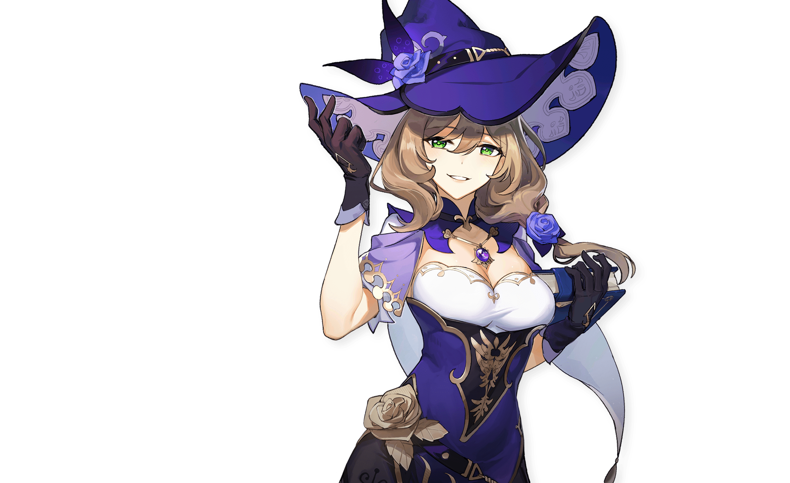
Lisa
Pustakawan Knights of Favonius yang sangat malas namun berwawasan sangat luas, pernah dinyatakan oleh Sumeru Academia sebagai siswi kelulusan terbaik 2 abad terakhir.
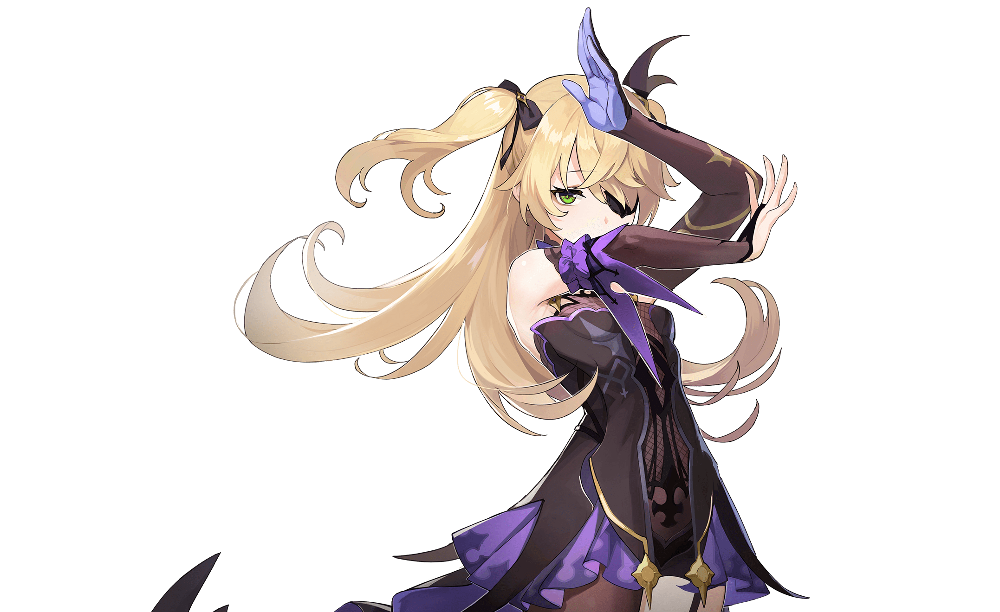
Fischl
Seorang gadis misterius yang menyebut dirinya sendiri "Prinzessin der Verurteilung", dia selalu terlihat bersama dengan seekor gagak hitam yang bernama Oz.
Barbara
Setiap penduduk Mondstadt mendambakan Barbara. Tetapi kata "idola" yang melekat padanya, dia hanya melihatnya dari majalah.
Mona
Seorang astrolog yang menyebut dirinya sendiri sebagai "Astrologist Mona Megistus", dan memiliki kemampuan yang sesuai dengan julukannya. Kepandaiannya setara dengan keangkuhannya.
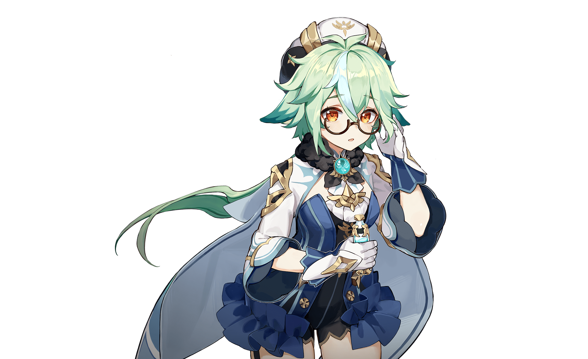
Sucrose
Seorang alkemis dipenuhi dengan rasa ingin tahu tentang semua hal. Dia meneliti bio-alkimia.
Xianyun
Salah satu Adeptus yang agung dan mulia dari Jueyun, "Cloud Retainer". Ahli segala jenis mekanika, yang hatinya kini berpaling kepada dunia fana. "Xianyun" Adalah nama yang digunakannya setelah turun gunung.
Ganyu
Seorang sekretaris di Yuehai Pavilion. Darah hewan pusaka Qilin mengalir di dalam tubuhnya.
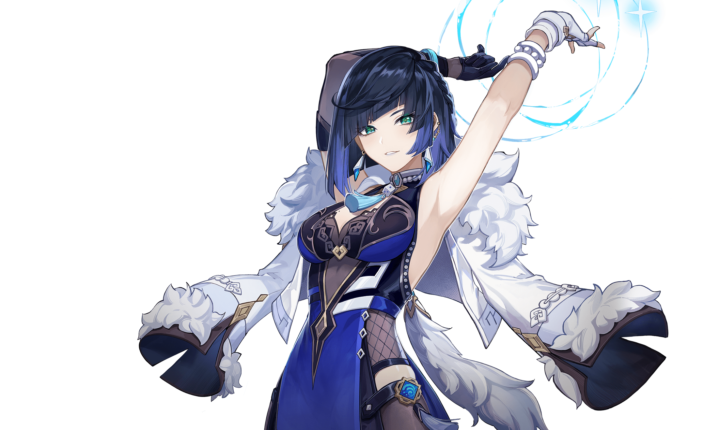
Yelan
Orang misterius yang mengaku bekerja di Bagian Urusan Sipil, tetapi "tidak terdaftar" di data Bagian Urusan Sipil.
Hutao
Master ke-77 Wangsheng Funeral Parlor. Dia mengambil alih bisnis ini di umur yang cukup muda.
Shenhe
Seorang murid Adeptus dengan temperamen yang sedikit unik. Karena sudah lama hidup terisolasi di pegunungan Liyue, sifatnya juga menjadi acuh tak acuh dan menjaga jarak seperti para Adeptus.
Keqing
Yuheng dari Liyue Qixing, dia punya banyak hal yang ingin dikatakan mengenai Rex Lapis yang memerintah Liyue- dan pada kenyataannya, para Dewa mengagumi orang-orang sepertinya.
Ei
Yang Mulia, Sang Narukami Ogosho Yang Mahakuasa. Dia menjanjikan para penduduk Inazuma keabadian yang tidak akan pernah berubah.
Yae Miko
Lady Guuji dari Kuil Agung Narukami juga menjabat sebagai pemimpin redaksi Yae Publishing House. Kecerdasan dan kelicikan yang tidak dapat dibayangkan tersembunyi di balik penampilannya yang cantik.
Kamisato Ayaka
Putri dari Klan Kamisato di Yashiro Commission. Bermartabat dan elegan, cerdas dan tangguh.
Yoimiya
Pemilik Naganohara Fireworks. Juga dikenal sebagai "Ratu Festival Musim Panas", dia mahir membuat kembang api yang melambangkan harapan dan impian semua orang.
Sangonomiya Kokomi
Sang Pemimpin Suci di Pulau Watatsumi. Segala urusan yang terjadi di pulau tersebut ada dalam genggaman nona muda ini.
Nilou
Penari terkenal di Teater Zubayr. Tariannya elegan dan gemulai, pembawaannya ramah dan polos.
Nahida
Seorang gadis yang dikurung bak burung di dalam sangkar Sanctuary of Surasthana, hanya bisa melihat dunia dari dalam mimpi.
Collei
Seorang Penjaga Hutan Pemula yang aktif di Hutan Avidya. Tutur kata dan perbuatannya sangat lembut, namun kepribadiannya sedikit tertutup.
Faruzan
Peneliti dari "seratus tahun lalu". Dia suka mengaku diri sebagai seniornya semua orang dan punya pengetahuan yang luas tentang berbagai naskah kuno dan segala jenis mesin.
Dehya
Seorang anggota Eremite, sebuah organisasi tentara bayaran di Sumeru. Dia berani, kuat, dan sudah sangat terkenal di kalangan Eremite.
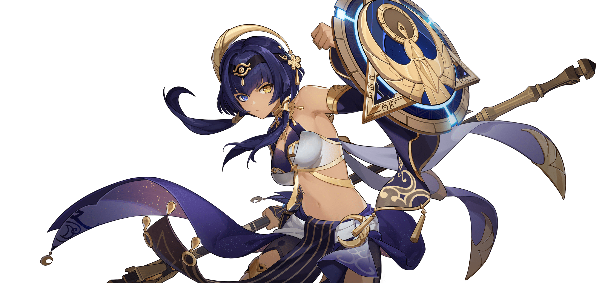
Candace
Keturunan Raja Deshret yang memiliki mata kiri berwarna kuning keemasan. Pelindung Desa Aaru.
Lynette
Asisten pesulap yang tidak banyak bicara. Emosinya sulit ditebak, persis seperti kucing.
Charlotte
Seorang reporter dari The Steambird yang selalu terlihat sangat bersemangat. Ia tidak pernah berhenti berlari ke sana kemari untuk mencari "kebenaran".
Furina
Pusat perhatian utama panggung pengadilan, hingga tepuk-tangan di penghujung acara terdengar.
Navia
Ketua Spina di Rosula, bos yang cantik, baik, dan bertanggung jawab.
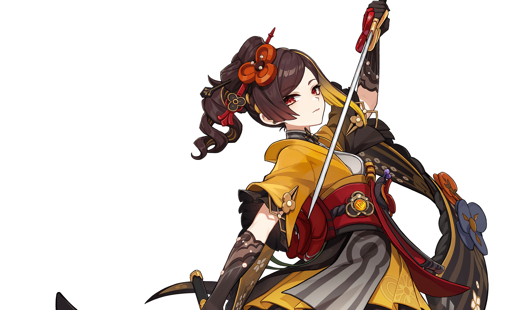
Chiori
Pemilik Chioriya Boutique. Penjahit yang namanya sangat terkenal di Fontaine.
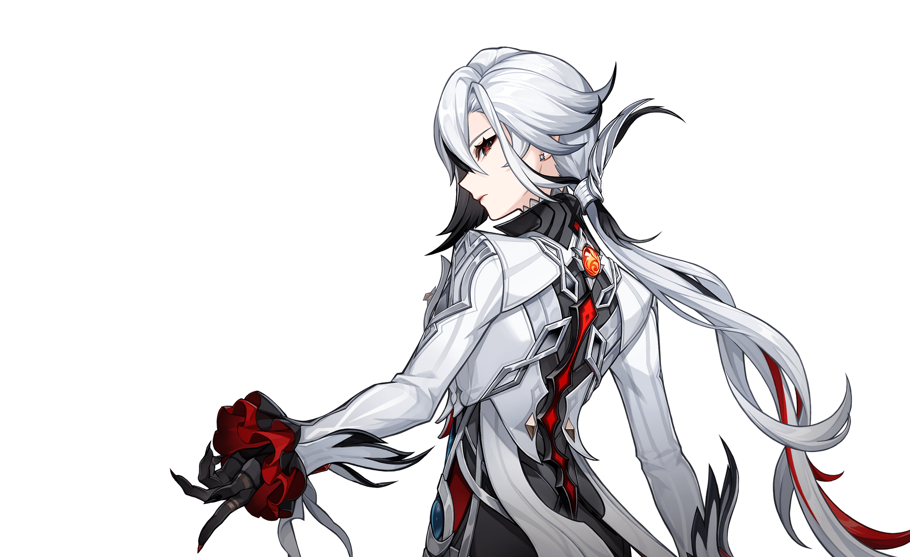
Arlecchino
Fatui Harbinger ke-4 "The Knave". Diplomat yang tenang dan kejam. Dikenal sebagai "Ayah" yang dihormati dan dapat diandalkan oleh anak-anak di House of the Hearth.
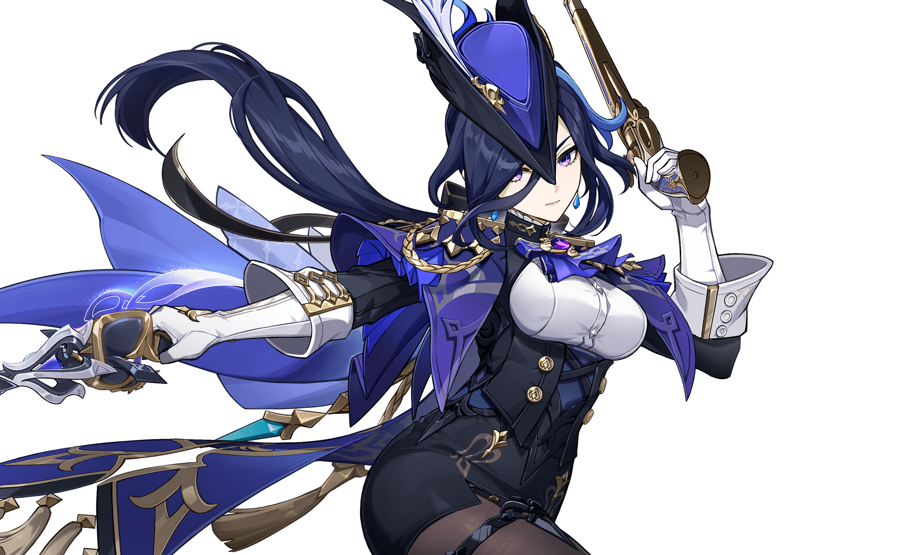
Clorinde
Petarung Juara tak terkalahkan. Dengan pedang di tangannya, dia mempertahankan keadilan di Court of Fontaine.
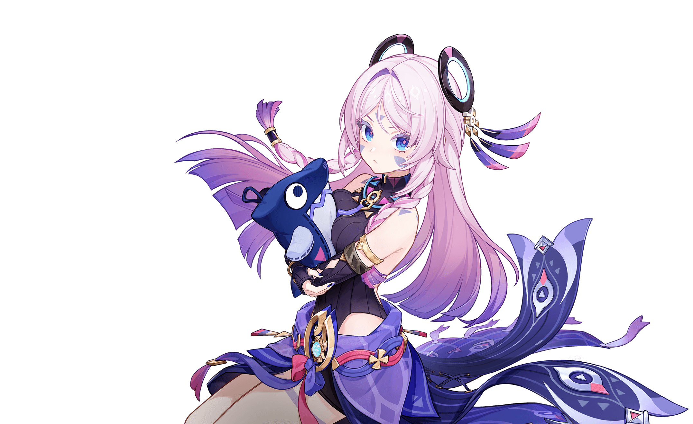
Citlali
Shaman Agung dari Penguasa Angin Malam, Nenek Itztli yang dihormati oleh orang dari semua suku.
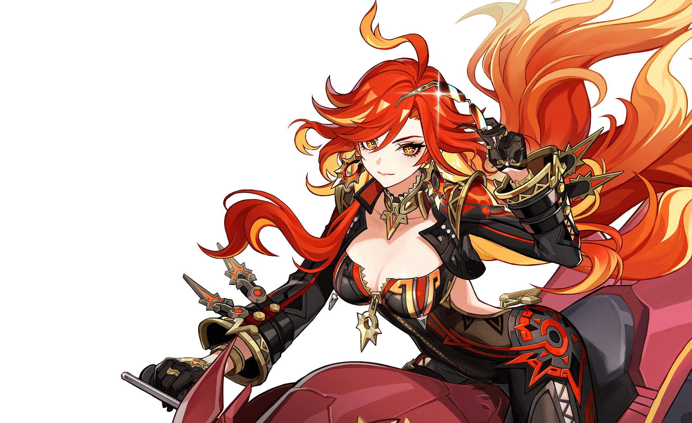
Mavuika
Seorang pemimpin Natlan yang mewarisi Marga Kuno "Kiongozi". Dia bersumpah untuk menerangi masa depan bangsa peperangan dengan Api Keramat.
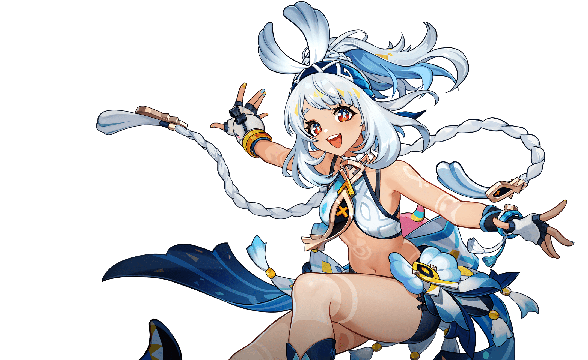
Mualani
Pemandu yang sudah terkenal di seantero Natlan, merupakan pemilik toko olahraga air, merupakan ahli dalam berbagai jenis berselancar ombak.
Kachina
Pejuang muda Nanatzcayan yang menyandang Marga Kuno "Uthabiti". Baik hati dan pantang menyerah, dia tumbuh lebih kuat acap kali berhasil melewati rintangan yang menghadang.
Xilonen
Seorang Pengukir Marga Nanatzcayan yang sangat terampil dalam mencari keseimbangan antara beban kerja yang berat dan hidup dengan nyaman.
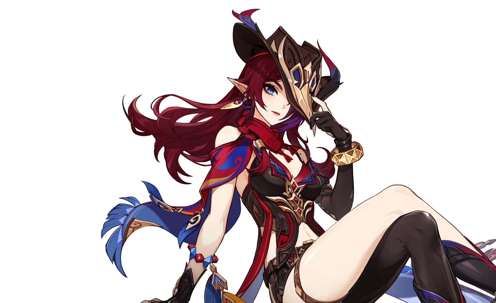
Chasca
"Penengah" Tlalocan yang sudah berhasil mengakhiri perselisihan yang tak terhitung jumlahnya.